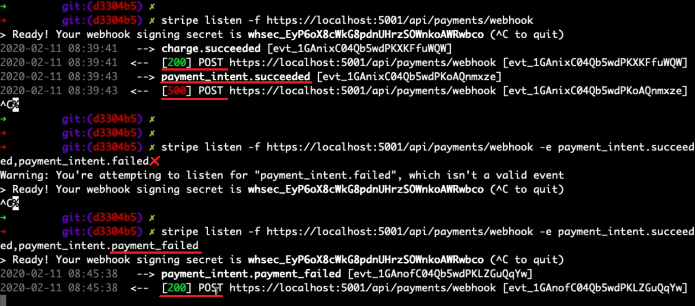

| Order |
Date |
Total |
Status |
| # {{order.id}} |
{{order.orderDate | date: 'medium'}} |
{{order.total | currency}} |
{{order.status}} |
Status would not be "pending" if the payment was real. When we listen to stripe with webhook,
the status changes according to the hook status. But we can't watch hooks because it is running as CLI.
The webhook functions for the CLI are available in payments.controller. What you need to do is to download
Stripe CLI, open command prompt in its directory, type stripe login and connect your account,
then run the
code
stripe listen -f https://localhost:5001/api/payments/webhooks -e payment_intent.succeeded,
payment_intent.payment_failed then complete payment and response is in cmd.
